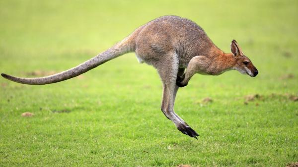

Animales en peligro de extinción
Lamentablemente, hoy en día son muchas las especies en peligro de extinción. Muchas de ellas, debido a la acción del hombre y el cambio climático global, lo que resulta igualmente un efecto indirecto de las actividades del ser humano. Algunas de estas especies en peligro ya están condenadas a desaparecer de aquí a unos años y, aunque hay muchas organizaciones que trabajan por preservarlas, día a día siguen sufriendo.
Te mostraremos los animales en mayor peligro de extinción y te explicamos cómo proteger animales en peligro de extinguirse.
El oso blanco u oso polar
¿Cuáles son las especies animales en riesgo de extinguirse? Según muchos rankings que indican qué animales están en mayor peligro de extinción, entre las principales especies en peligro de extinción, encontramos al . Este tipo de mamífero es una de las especies más amenazadas de la Tierra, y algunos no les pronostican más de un siglo de vida. La razón principal del peligro que corren los osos polares (Ursus maritimus) es el deshielo del Ártico o Polo Norte, su hábitat natural.
Se calcula que existen solamente algo más de 20.000 ejemplares.

Rinoceronte de Java
Seguimos esta lista de animales en peligro de extinción en el mundo hablando sobre una especie de rinoceronte. Resulta muy dramática la situación en la que se encuentra el rinoceronte de Java (Rhinoceros sondaicus), no solo porque ya quedan muy pocos ejemplares, sino por la razón principal que los empuja a su desaparición: la caza para convertirle en adorno o la creencia, en China y en culturas orientales, de que su cuerno tiene propiedades curativas. La caza, en general, tiene efectos muy negativos para los animales, más aún en determinadas especies.

Los tigres, especie en gran peligro de extinción
Esta es otra de las especies animales en mayor peligro de extinción en Asi y en el mundo. Se dice que hay menos de 4.000 tigres (Panthera tigris) en el mundo que viven en su hábitat natural y su supervivencia está cada vez más amenazada, sufriendo más en los últimos años. De nuevo la caza es el elemento principal que ha impulsado a ello, aunque también influye la deforestación, una consecuencia indirecta de la acción del ser humano. El tigre de Java y el de Bali ya se extinguieron y, a pesar de que su carne no se usa habitualmente para la nutrición, los tigre se cazan para aprovechar su piel, que se paga a altos precios en el mercado. Dos de las subclases más amenazadas son los tigres de Bengala y los tigres de Amoy o Xiamen.

El canguro en peligro de extinción
Si te preguntabas qué animales están en peligro de extinción, puede que te extrañe saber que hay quienes consideran que este animal, el canguro, está ya en riesgo.
El canguro, de la familia Macropodidae, es un animal australiano del cuál se come su carne y también se exporta a otros lugares para su consumo, así como objetivo de actividades turísticas, de la caza furtiva, etcétera. Además, a pesar de su caza, este marsupial sufre sobre todo los efectos del calentamiento global. Podría desaparecer en unos años, según expertos. Si las temperaturas siguiesen aumentando en los próximos años, los canguros podrían estar condenados a desaparecer en unos años, pues su población va descendiendo poco a poco por lo comentado y por el aumento de las temperaturas a mayor ritmo podría empeorar drásticamente en poco tiempo.

El atún rojo
Este pez migratorio, llamado Thunnus thynnus, se suele encontrar en el Atlántico y el mar Mediterráneo ha dado síntomas de debilidad en los últimos años. ¿El motivo de que esté este animal en peligro de extinción? La utilización del atún rojo en el sushi de calidad del mercado. En estos momentos, ya existe una prohibición temporal para dejar de consumirlo de manera tan abusiva; de lo contrario, podría desaparecer.
El gorila de montaña
El gorila de montaña (Gorilla beringei beringei) es otro de los animales en vía de extinción, de hecho esta especie se encuentra en peligro grave de extinción, respecto a su caza y el deterioro que ha sufrido su hábitat. Se calcula que existen menos de 800 individuos de gorila de montaña viviendo en su entorno natural.
Los pingüinos
Aunque todavía hay bastantes ejemplares, (Spheniscidae) también sufren las consecuencias del deshielo y el calentamiento global. Son animales que migran y muchos están muriendo por el camino. Por ello, algunas de sus especies ya han entrado en la lista de los animales en mayor peligro de extinción, con mayor riesgo en zonas concretas del planeta, como el polo Sur.
El perro salvaje africano en peligro de extinción
El licaón, perro salvaje africano o Lycaon pictus es otra de las especies animales en mayor peligro de extinción en el mundo. Según la IUCN Red List, los licaones o perros salvajes africanos están en peligro de extinción y, además, según los datos más recientes recogidos por la entidad, su población sigue disminuyendo.
Son varias las amenazas que sufre, pues le presionan tanto la destrucción de su hábitat, como su caza ilegal por sus pieles y su captura vivos como mascota, pues en algunas zonas de África se han llegado a tener domesticados para su uso como guardianes, igual que ha sucedido con las hienas o, incluso, guepardos.
¿La tortuga laúd está en peligro de extinción?
Aunque ha sobrevivido en la historia cientos de millones de años, ahora se la ha declarado una especie en estado de vulnerabilidad grave, ya que su población sigue disminuyendo día a día, lo que la lleva a estar a medio paso del peligro de extinción. Actualmente, se considera que hay entre 20.000 y 30.000 ejemplares
Viven en el Pacífico y es la tortuga de mar más grande que existe. Aunque se reproducen con rapidez, mueren porque los pescadores las atrapan, muchas veces de forma accidental, y tienen muchos más depredadores cuando son crías o todavía están en los huevos. Varias asociaciones trabajan para dar a conocer la ruta migratoria de las tortugas laúd (Dermochelys coriacea), para evitar que sean capturadas por accidente y desaparezcan.
En este otro artículo de EcologíaVerde sobre ¿La tortuga laúd está en peligro de extinción? puedes informarte más sobre su estado, características y qué hacer para ayudar a esta especie marina.
¿Los osos panda están en peligro de extinción?
No solo los osos polares están amenazados, también vemos a menudo en las noticias ecológicas como los osos panda, este animal exótico tan llamativo, están gravemente amenazados. La principal causa de su situación es la destrucción del bambú en el planeta Tierra, que es el alimento por antonomasia de estos mamíferos.
No obstante, desde hace un tiempo, han conseguido incrementar su población y las listas oficiales ahora los catalogan en estado de vulnerabilidad, por lo que parece que poco a poco se van recuperando.